11 Benchmarks and Evaluation
Prerequisites: This chapter assumes familiarity with basic machine learning concepts including train/test splits, common metrics (accuracy, auROC), and model evaluation (Chapter 5). Understanding of genomic data types (Chapter 2) and variant effect prediction concepts (Chapter 4) will help contextualize benchmark tasks.
Learning Objectives: After completing this chapter, you should be able to:
- Navigate the major benchmark suites for protein (TAPE, FLIP, ProteinGym), DNA (BEND, Genomic Benchmarks), and variant effect prediction (ClinVar, CAGI)
- Identify and prevent common leakage pathways in genomic evaluations (homology leakage, label circularity, temporal leakage)
- Select appropriate splitting strategies (homology-aware, chromosome-based, ancestry-stratified) based on the generalization question being asked
- Choose metrics aligned with deployment objectives, distinguishing discrimination, calibration, and clinical utility
- Design ablation studies and baseline comparisons that isolate genuine model contributions
- Critically evaluate benchmark claims by identifying proxy-target gaps and systematic biases
Chapter Structure: We first survey what benchmarks exist across modalities (Sections 1-5), then examine how to evaluate properly (Sections 6-11), and finally address the gap between benchmark success and deployment value (Sections 12-13).
Every benchmark measures a proxy. ClinVar pathogenicity labels proxy clinical impact. Area under the receiver operating characteristic curve (auROC) on held-out variants proxies discrimination ability in deployment. Chromatin accessibility predictions proxy regulatory function. The gap between proxy and target varies across benchmarks, across variant types, and across populations. A model achieving state-of-the-art performance on ClinVar may systematically miscalibrate predictions for the rare variants that matter most clinically, because ClinVar’s composition does not reflect the distribution of variants clinicians actually encounter. A DNA language model excelling at enhancer classification may have learned GC content rather than regulatory grammar, because the benchmark’s negative examples differ from positives in ways that have nothing to do with enhancer function.
Understanding what benchmarks actually measure, and how that differs from what we need to know, is prerequisite to interpreting any leaderboard result. The genomic AI field has accumulated substantial evaluation infrastructure. Dozens of benchmark suites target different modalities: protein structure and function, DNA regulatory elements, variant pathogenicity, gene expression prediction, and more. Hundreds of individual tasks probe specific capabilities. Thousands of models have reported results, creating leaderboards that rank approaches and track progress over time. This infrastructure enables comparison and drives methodological improvement. Yet the relationship between benchmark success and deployment value remains poorly characterized. A foundation model that dominates protein benchmarks may fail on the specific protein family relevant to a drug discovery campaign. A variant effect predictor that leads regulatory benchmarks may provide no clinical utility for the variant classes that lack representation in evaluation data.
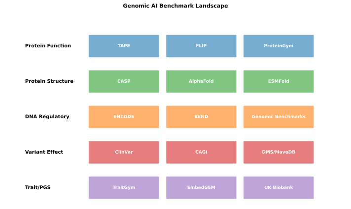
11.1 Protein Language Model Benchmarks
Protein language models (Chapter 15) benefit from the longest-established and most systematic evaluation ecosystem in genomic AI, reflecting both the longer history of computational protein science and the relative tractability of protein structure and function prediction compared to the regulatory genomics tasks discussed in Chapter 16. The maturity of protein benchmarks reflects both the longer history of computational protein science and the relative tractability of protein structure and function prediction compared to regulatory genomics.
11.1.1 TAPE: Tasks Assessing Protein Embeddings
The Tasks Assessing Protein Embeddings (TAPE) benchmark, introduced in 2019, established the template for systematic protein representation evaluation (Rao et al. 2019). TAPE frames protein language model assessment as transfer learning evaluation (Chapter 9): pretrained models generate embeddings (Section 5.6), which are then used as features for supervised prediction on downstream tasks. This framework decouples representation quality from task-specific modeling, enabling comparison across architectures that may have very different inductive biases.
TAPE comprises five tasks spanning different aspects of protein biology. Secondary structure prediction requires classifying each residue as helix, sheet, or coil, testing whether embeddings capture local structural preferences. Contact prediction asks whether residue pairs are spatially proximate in the folded structure, probing the representation’s ability to encode tertiary structure information from sequence alone. Remote homology detection requires classifying proteins into structural superfamilies, testing whether embeddings capture evolutionary relationships that transcend sequence similarity. Fluorescence prediction and stability prediction use data from deep mutational scanning experiments to assess whether embeddings encode fitness landscapes.
The benchmark’s design reflects deliberate methodological choices. Train, validation, and test splits enforce sequence identity thresholds to prevent homology-based leakage (Section 12.4). Evaluation uses simple linear or shallow neural network heads rather than complex task-specific architectures, isolating representation quality from modeling capacity. Standardized preprocessing and data loading eliminate confounds from inconsistent implementation.
TAPE established a crucial principle: evaluate representations separately from task-specific modeling. By using simple linear classifiers on top of frozen embeddings, TAPE isolates what the pretrained model learned from what a complex head might learn during fine-tuning. This approach became the standard template for foundation model evaluation across genomics, enabling fair comparison between models with different architectures and pretraining objectives.
TAPE’s influence extended beyond its specific tasks. The benchmark established norms for protein representation evaluation: systematic coverage of diverse prediction targets, controlled transfer learning protocols, and explicit attention to data splitting. Subsequent benchmarks adopted and extended this framework.
11.1.2 FLIP: Function-Linked Protein Benchmark
The FLIP (Function-Linked Integrated Protein) benchmark addresses gaps in TAPE’s coverage by focusing on experimentally measured functional properties (Dallago et al. 2022). Where TAPE includes structurally derived labels and computational annotations, FLIP emphasizes high-throughput experimental assays that directly measure protein fitness.
FLIP aggregates deep mutational scanning datasets across diverse proteins and functional readouts. The benchmark includes assays measuring enzymatic activity, binding affinity, thermostability, and expression level. Each dataset provides quantitative measurements for thousands of single-point mutations, enabling evaluation of fine-grained variant effect prediction.
The benchmark’s value lies in its experimental grounding. Computational structure predictions and evolutionary conservation scores, while useful, are indirect proxies for function. Deep mutational scanning provides direct measurements of how sequence changes affect the property of interest. Models that perform well on FLIP demonstrate the ability to predict experimentally validated functional consequences rather than computationally inferred annotations.
FLIP also introduced systematic evaluation of different splitting strategies. Random splits, where training and test variants are sampled uniformly from the same protein, represent the easiest setting. Contiguous splits, where training and test variants occupy different sequence regions, test spatial generalization. Modulo splits, which interleave training and test positions along the sequence, provide intermediate difficulty. Performance typically degrades from random to contiguous splits, revealing how much models rely on local sequence context versus genuine functional understanding.
Before reading on, consider: If a model achieves 0.85 correlation on FLIP with random splits but only 0.60 correlation with contiguous splits, what does this reveal about what the model has learned? What kind of information would be available in random splits but not contiguous splits?
Hint: Think about what information from nearby positions might “leak” across random splits.
11.1.3 ProteinGym: Comprehensive Variant Effect Evaluation
ProteinGym has emerged as the most comprehensive benchmark for protein variant effect prediction, compiling 217 deep mutational scanning assays across diverse protein families (Notin et al. 2023). The benchmark’s scale enables statistically robust comparison across modeling approaches while its diversity reveals where different methods excel or struggle.
The primary evaluation metric is Spearman correlation between predicted and experimentally measured fitness effects. This rank-based metric is appropriate for deep mutational scanning data, where absolute fitness values depend on assay-specific calibration but relative rankings are more comparable across experiments. ProteinGym reports correlations for each assay individually and aggregated across the full benchmark, enabling both global comparison and identification of task-specific strengths.
ProteinGym distinguishes between zero-shot and supervised evaluation regimes. In zero-shot evaluation, models predict variant effects without any task-specific training, relying entirely on representations learned during pretraining. Models like ESM-1v (Section 15.1) compute effects as log-likelihood ratios under the pretrained language model, while structure-based methods like AlphaMissense (Section 18.2.3) incorporate predicted structural consequences. In supervised evaluation, models are fine-tuned on a subset of measured variants before predicting held-out effects. The gap between zero-shot and supervised performance indicates how much task-specific information improves over general-purpose representations.
The benchmark reveals systematic patterns in model performance. Protein language models generally outperform conservation-based methods, particularly for variants in regions with sparse evolutionary sampling. Structure-aware models show advantages for variants affecting protein stability or buried residues. Ensemble methods that combine multiple predictors often achieve the highest correlations, suggesting that different approaches capture complementary information.
ProteinGym’s limitations mirror those of its constituent datasets. Deep mutational scanning experiments are biased toward well-studied proteins amenable to high-throughput screening. Assay-specific selection pressures affect which variants appear deleterious: a variant may strongly affect enzymatic activity while leaving thermostability unchanged, or vice versa. The benchmark measures correlation with specific experimental readouts rather than clinical pathogenicity, which integrates multiple functional consequences in complex ways.
| Benchmark | Tasks | Labels | Splitting | Strengths | Limitations |
|---|---|---|---|---|---|
| TAPE | 5 (structure, homology, fitness) | Mixed (experimental + computational) | Homology-aware | Established template; diverse tasks | Some computational labels; limited DMS coverage |
| FLIP | Multiple DMS datasets | Experimental only | Multiple strategies (random, contiguous, modulo) | Experimental grounding; systematic split analysis | Limited to proteins with DMS data |
| ProteinGym | 217 DMS assays | Experimental only | Zero-shot + supervised | Comprehensive scale; diverse protein families | Biased toward well-studied proteins |
11.1.4 Structure Prediction Benchmarks
Protein structure prediction benchmarks derive from the Critical Assessment of protein Structure Prediction (CASP) tradition, which has evaluated computational methods against experimentally determined structures since 1994 (kryshtafovych_critical_2021?). The dramatic success of AlphaFold2 at CASP14 in 2020 transformed the field, but structure prediction benchmarks remain relevant for evaluating single-sequence methods and assessing whether language model pretraining improves structural accuracy.
Structure prediction quality is typically assessed using the Global Distance Test (GDT-TS) and Template Modeling score (TM-score). GDT-TS measures the percentage of residues that can be superimposed within various distance thresholds, providing a single number between 0 and 100 that correlates well with visual assessment of structural similarity. TM-score normalizes by protein length, enabling comparison across proteins of different sizes.
For protein language models, the relevant evaluation setting is single-sequence structure prediction, where the model receives only the target sequence without multiple sequence alignments. This tests whether pretraining on evolutionary sequence databases enables structure prediction without explicit evolutionary analysis at inference time. ESMFold (Section 15.4) demonstrated that single-sequence prediction can approach MSA-based methods for many proteins, though performance gaps remain for sequences with sparse evolutionary coverage.
Structure prediction benchmarks complement sequence-based evaluations by testing whether learned representations encode biophysical constraints. A model that achieves high accuracy on contact prediction or secondary structure classification may still fail to integrate these local predictions into globally consistent structures. The emergence of accurate single-sequence structure prediction from language model embeddings suggests that pretraining captures substantial structural information, even without explicit structural supervision.
11.2 DNA and Regulatory Benchmarks
DNA foundation models (Chapter 14) and regulatory models (Chapter 16) face a less mature but rapidly developing benchmark landscape compared to the protein ecosystem. Early deep learning work in genomics focused on individual tasks derived from ENCODE-style assays (Section 2.4.1), establishing evaluation paradigms that later benchmark suites would systematize. Recent efforts have introduced benchmark suites that attempt to standardize evaluation across multiple tasks, tissues, and species.
11.2.1 Classical Regulatory Prediction Tasks
The earliest deep learning benchmarks for genomics framed regulatory prediction as classification over short sequence windows. Transcription factor binding prediction asks whether a specific TF ChIP-seq peak overlaps a given sequence window, typically around 1 kilobase centered on the binding site. Open chromatin prediction requires classifying regions as accessible or inaccessible based on DNase-seq or ATAC-seq signal. Histone mark prediction asks whether a chromatin modification peak (H3K27ac, H3K4me3, etc.) is present at each position.
These tasks derive from consortia like ENCODE and Roadmap Epigenomics (Section 2.4.1), which systematically profiled chromatin states across cell types. Benchmark construction typically involves defining positive regions from called peaks and sampling negative regions from elsewhere in the genome, extracting fixed-length sequences centered on each region, and evaluating binary classification using auROC or average precision.
Models such as DeepSEA, Basset, and DanQ established baseline performance on these tasks (Chapter 6 for architectural details). Their success demonstrated that convolutional networks could learn sequence features predictive of regulatory state without hand-crafted motifs. Modern foundation models still report performance on similar tasks as sanity checks, though these classical benchmarks have significant limitations.
The primary limitation of classical regulatory benchmarks is that binary classification over short windows fails to capture the quantitative, cell-type-specific, and long-range nature of transcriptional regulation. A region may be weakly accessible in some cell types and strongly accessible in others; binary labels collapse this continuous variation. Short windows cannot assess whether models capture distal regulatory interactions that span tens to hundreds of kilobases. Evaluation on curated peak regions may overestimate performance relative to genome-wide prediction, where the vast majority of positions are regulatory “background.”
11.2.2 Quantitative Regulatory Prediction
Beyond binary classification, benchmarks increasingly require prediction of quantitative regulatory readouts. Signal regression asks models to predict per-base or per-bin signal intensity from ChIP-seq, ATAC-seq, or related assays. Gene expression prediction requires predicting transcript abundance (TPM, counts) from promoter sequences or larger genomic contexts. Massively parallel reporter assays (MPRAs) provide systematic measurements of enhancer or promoter activity for thousands of sequences, enabling evaluation of quantitative activity prediction.
Hybrid architectures like Enformer (Section 16.2) popularized benchmarks combining large receptive fields with dense quantitative targets across many assays and cell types. Evaluation metrics shift from auROC to Pearson or Spearman correlation between predicted and observed profiles. Some benchmarks report correlation relative to replicate concordance, establishing an upper bound set by experimental reproducibility.
Quantitative benchmarks better reflect the continuous nature of regulatory activity but introduce new challenges. Heterogeneous noise across assays and laboratories complicates aggregation: should a model be penalized equally for poor performance on a low-quality assay versus a high-quality one? Cell-type diversity raises questions about how to weight performance across tissues: is accurate prediction in a rare cell type more or less important than in a common one? The relationship between predicted and observed signal depends on assay-specific calibration that may not transfer across experimental batches.
11.2.3 Genomic Benchmarks
The Genomic Benchmarks resource provides standardized classification datasets for DNA sequence models (Grešová et al. 2023). The benchmark compiles tasks including enhancer identification, promoter recognition, splice site detection, and coding sequence classification across multiple species. Standardized train, validation, and test splits enable direct comparison of different architectures without confounds from inconsistent data processing.
Genomic Benchmarks emphasizes accessibility and reproducibility. Datasets are available in a unified format with documented preprocessing. Baseline results for multiple architectures provide reference points for new models. The benchmark includes tasks of varying difficulty, from relatively easy (distinguishing coding from non-coding sequence) to challenging (identifying tissue-specific enhancers).
The benchmark’s limitations reflect its design priorities. Focus on classification rather than regression excludes quantitative prediction tasks. Task difficulty varies substantially, with some tasks approaching saturation where gains become difficult to measure. Species coverage, while broader than many benchmarks, remains biased toward well-studied model organisms.
11.2.4 BEND: Benchmark for DNA Language Models
BEND (Benchmark for Evaluating DNA Models) provides a unified framework for evaluating genomic foundation models across diverse tasks (Marin et al. 2024). The benchmark includes regulatory element classification, chromatin accessibility prediction, variant effect scoring, and gene expression prediction. Standardized splits and evaluation protocols enable fair comparison across model families.
BEND’s design reflects lessons learned from earlier benchmarks. Tasks span multiple biological scales, from nucleotide-level variant effects to kilobase-scale regulatory elements. Evaluation includes both zero-shot settings (using pretrained representations directly) and fine-tuned settings (adapting models to specific tasks). Performance is reported separately for each task rather than aggregated into a single score, acknowledging that different models may excel at different aspects of genomic prediction.
Comparative evaluations using BEND reveal that no single model dominates across all tasks. Architecture choices (CNN versus transformer versus state space model), tokenization schemes (single nucleotide versus k-mer versus BPE), and pretraining corpora all influence task-specific performance (Chapter 5). These patterns inform model selection for specific applications while highlighting the limitations of aggregate benchmarks that obscure such variation.
Test your understanding of the DNA benchmark landscape:
- What is the key difference between classical regulatory benchmarks (binary classification) and modern quantitative benchmarks?
- Why might a model perform well on Genomic Benchmarks but poorly on BEND?
- What does it mean when “no single model dominates across all tasks” in BEND?
Consider how benchmark design choices affect what capabilities are actually being measured.
11.2.5 Long-Range Benchmarks
Long-range regulatory interactions, where enhancers tens to hundreds of kilobases from their target genes influence expression, require benchmarks that specifically test extended context modeling. The Long Range Benchmark (LRB) evaluates models’ ability to integrate information across large genomic distances, with tasks including predicting distal enhancer-promoter interactions, modeling TAD boundary effects, and identifying long-range regulatory dependencies [Citation Needed].
DNALongBench extends evaluation to ultra-long contexts spanning up to millions of base pairs [Citation Needed]. Tasks at this scale test whether models can leverage chromosome-level context for regulatory prediction, potentially capturing effects from 3D chromatin organization and large-scale chromatin domains.
These benchmarks are particularly relevant for evaluating efficient attention mechanisms, state space models, and other architectures designed to extend effective context length (Section 7.4). Performance on long-range benchmarks does not necessarily correlate with short-range task performance, indicating that different architectural choices optimize for different aspects of sequence modeling.
11.2.6 Cross-Species Evaluation
GenBench and related resources test whether models trained on one organism generalize to related species [Citation Needed]. Cross-species evaluation is important for several reasons. Many applications require predictions in non-human organisms (agricultural genomics, model organism research, comparative genomics). Multi-species training may improve within-species performance by providing additional evolutionary signal (Section 8.8.3). The ability to transfer across species indicates that models have learned general principles of genome organization rather than species-specific artifacts.
Cross-species benchmarks typically evaluate models on held-out species not seen during training. Performance degradation from training to held-out species indicates the degree to which learned representations depend on species-specific features. Some architectures show better cross-species transfer than others, suggesting differences in how well they capture conserved regulatory principles.
11.3 Variant Effect Prediction Benchmarks
Variant effect prediction (VEP) benchmarks connect sequence changes to molecular or phenotypic consequences, addressing the clinically central question of which variants matter. These benchmarks span multiple biological levels, from molecular function to clinical pathogenicity.
11.3.1 Clinical Variant Databases
ClinVar provides the most widely used labels for clinical variant effect prediction, aggregating pathogenicity assertions from clinical laboratories and researchers worldwide (Section 2.8.1). Benchmarks derived from ClinVar frame variant interpretation as classification: given a variant, predict whether it is pathogenic, likely pathogenic, benign, or likely benign.
ClinVar’s value as a benchmark stems from its clinical relevance. Variants classified in ClinVar represent the actual population of variants encountered in clinical testing. Performance on ClinVar directly addresses whether a model can assist variant interpretation workflows. The database’s scale (over 2 million variant submissions as of 2024) enables statistically robust evaluation (Landrum et al. 2018).
ClinVar’s limitations as a benchmark are equally important. Submission heterogeneity means that label quality varies dramatically: expert-curated panels provide high-confidence classifications while single-laboratory submissions may reflect limited evidence. Version sensitivity means that benchmark composition changes over time as new submissions arrive and old classifications are updated. Most consequentially, circularity with computational predictors creates feedback loops: variants may have been classified using the very tools being evaluated, inflating apparent performance. This circularity problem, examined in detail for classical predictors in Section 4.5 and for its broader confounding implications in ?sec-ch22-label-bias, represents one of the most insidious forms of benchmark contamination.
Ancestry and gene coverage biases profoundly shape what ClinVar benchmarks measure. Variants from European ancestry individuals and well-studied disease genes are heavily overrepresented. High performance on ClinVar demonstrates accuracy for this specific population rather than robust generalization across human genetic diversity (Section 3.7). Benchmarks stratified by ancestry reveal substantial performance gaps, with models typically performing worse on variants from underrepresented populations.
Best practices for using ClinVar as a benchmark include specifying the exact database version and download date, excluding variants with conflicting assertions, stratifying performance by evidence level and ancestry, and comparing to baselines using only allele frequency to detect circularity. These practices are detailed in Section 12.4, with specific guidance on detecting label leakage in Section 12.4.1.
11.3.2 CAGI: Critical Assessment of Genome Interpretation
The Critical Assessment of Genome Interpretation (CAGI) challenges provide prospective evaluation of variant effect predictors on unpublished datasets (hoskins_cagi6_2023?). Unlike retrospective benchmarks that evaluate models on historical data, CAGI distributes prediction targets before ground truth is available, preventing any possibility of overfitting to known labels.
CAGI challenges cover diverse prediction targets. Some challenges focus on molecular phenotypes: predicting the effect of variants on protein stability, binding affinity, or enzymatic activity. Others target clinical phenotypes: predicting disease risk, drug response, or clinical severity from individual genomes. The diversity of challenges tests whether models generalize across different types of variant effects.
The prospective design of CAGI provides several crucial advantages over retrospective benchmarks:
- Predictions must be made before labels are known, eliminating leakage from any source
- The timeline forces models to commit to predictions rather than post-hoc optimization
- Community participation enables fair comparison across many approaches under identical conditions
This prospective design represents the gold standard for benchmark validity. When evaluating any retrospective benchmark result, ask: “Would this performance hold up in a CAGI-style prospective evaluation?”
CAGI’s limitation is scale: challenges include hundreds to thousands of variants rather than the millions available in databases like ClinVar. Statistical power to detect small performance differences is correspondingly limited. The challenges also depend on experimental collaborators willing to withhold data until after the prediction deadline, limiting the range of phenotypes that can be assessed.
11.3.3 Deep Mutational Scanning Benchmarks
Deep mutational scanning (DMS) provides systematic experimental measurement of variant effects across entire proteins or regulatory elements (Section 2.4.4). DMS benchmarks test whether models can predict these experimentally determined effects, providing direct validation against measured functional consequences rather than inferred clinical classifications.
MaveDB aggregates DMS datasets in a standardized format, enabling systematic benchmarking across diverse proteins and assays (esposito_mavedb_2019?). ProteinGym’s DMS component (discussed above) represents the most comprehensive benchmark in this space. For non-coding variants, MPRA datasets provide analogous systematic measurements of regulatory activity.
DMS benchmarks have distinct strengths and limitations compared to clinical databases. The experimental grounding means that labels reflect actual measured effects rather than clinical inference that may involve multiple assumptions. The relationship between DMS fitness and clinical pathogenicity is complex: a variant may substantially affect enzymatic activity without causing disease if the residual activity suffices for normal physiology. DMS benchmarks measure one component of the variant interpretation puzzle rather than the full clinical picture.
11.3.4 Regulatory and Non-Coding Variant Benchmarks
Non-coding variants require specialized benchmarks because their effects operate through different mechanisms than coding variants. The foundation model approaches to non-coding variant effect prediction are examined in ?sec-ch14-dna-vep, with the underlying regulatory models detailed in Chapter 16. MPRA-based benchmarks test whether models can predict the quantitative effect of variants on enhancer or promoter activity measured in reporter assays. Expression quantitative trait locus (eQTL)-based benchmarks use naturally occurring variants associated with expression changes, treating the statistical evidence for eQTL status as a proxy for regulatory impact.
The challenge for non-coding benchmarks is connecting molecular effects to phenotypic consequences. A variant may alter chromatin accessibility without affecting any gene’s expression. A variant may affect expression without influencing disease risk. This gap between molecular and clinical effects complicates interpretation: high performance on MPRA prediction does not necessarily translate to accurate regulatory disease variant interpretation.
Fine-mapped genome-wide association study (GWAS) variants provide another benchmark source for non-coding VEP. Statistical fine-mapping identifies putatively causal variants within associated loci (Section 3.4), and models can be evaluated on their ability to prioritize these variants over nearby non-causal variants. Performance on fine-mapping tasks more directly assesses clinical relevance than molecular phenotype prediction, though fine-mapping itself has substantial uncertainty.
| Benchmark Type | Label Source | Strengths | Limitations | Best For |
|---|---|---|---|---|
| ClinVar | Clinical assertions | Clinical relevance; scale | Circularity; ancestry bias; heterogeneous quality | Clinical deployment validation (with caveats) |
| CAGI | Prospective experiments | No leakage possible; forces commitment | Limited scale; infrequent | Gold-standard validation |
| DMS/MaveDB | High-throughput assays | Direct experimental measurement | Assay-specific; fitness != pathogenicity | Molecular mechanism understanding |
| MPRA | Reporter assays | Quantitative; regulatory focus | Reporter != endogenous; context-dependent | Regulatory variant effects |
| eQTL/GWAS | Statistical associations | Population-level evidence | Correlation != causation; LD confounding | Common variant prioritization |
11.4 Trait and Population-Level Benchmarks
At the individual and population level, benchmarks assess whether models improve prediction of complex traits and disease risk.
11.4.1 Polygenic Score Evaluation
Polygenic score (PGS) benchmarks evaluate how well genotype-derived scores predict disease risk or quantitative traits (Section 3.5). Common evaluation settings include within-biobank evaluation, where a single large cohort is partitioned into training and test sets, and cross-biobank evaluation, where models trained in one population are tested in another. The integration of foundation model features with PGS approaches represents an emerging research direction (Section 27.1).
Metrics depend on the phenotype. For quantitative traits, benchmarks report the coefficient of determination (\(R^2\)) or incremental \(R^2\) over non-genetic covariates. For binary disease outcomes, auROC and area under the precision-recall curve (auPRC) quantify discrimination. Calibration metrics assess whether predicted risks match observed event rates (Section 23.2). The clinical utility of PGS, discussed in Chapter 27, depends on all these properties: a score may discriminate well (high auROC) while being poorly calibrated (predicted risks do not match actual event rates).
Cross-population evaluation is particularly important because PGS portability is a major limitation of current methods (Section 3.7). Benchmarks stratified by ancestry typically reveal substantial performance degradation from European ancestry (where most GWAS have been conducted) to other populations. This degradation stems from multiple sources: different linkage disequilibrium patterns mean that tag SNPs identify different causal variants, population-specific variants are absent from training data, and effect sizes may differ across populations due to gene-environment interactions.
11.4.2 TraitGym
TraitGym provides a framework specifically designed to assess complex trait prediction using genomic foundation models (yan_traitgym_2024?). The benchmark evaluates whether foundation model embeddings or variant scores improve prediction beyond traditional polygenic score methods.
TraitGym’s design addresses several limitations of standard PGS benchmarks. Ancestry stratification is built into the evaluation protocol, requiring models to report performance separately for different population groups. Multiple phenotypes spanning different genetic architectures (highly polygenic versus more oligogenic) test generalization across trait types. Comparison to appropriate baselines (standard PGS methods, clinical covariates alone) isolates the contribution of foundation model features.
The benchmark is particularly relevant for assessing claims that genomic foundation models add predictive value beyond classical statistical genetics. Foundation models incur substantial computational costs compared to linear PGS models; TraitGym helps determine whether these costs are justified by improved prediction.
11.4.3 EmbedGEM Framework
The EmbedGEM framework evaluates whether foundation model embeddings capture biologically meaningful genetic signal, as opposed to technical artifacts or confounders (Mukherjee et al. 2024). The framework assesses embeddings along two axes: heritability and disease relevance.
The heritability axis measures how much genetic signal an embedding captures. EmbedGEM counts the number of genome-wide significant loci associated with embedding components and quantifies the strength of association through mean chi-squared statistics. Higher values indicate that the embedding reflects heritable biology rather than noise.
The disease relevance axis measures whether embedding-associated variants predict clinically meaningful outcomes. Polygenic scores constructed from embedding GWAS hits are evaluated for their ability to predict disease in independent cohorts. Incremental predictive value over standard clinical models indicates that the embedding captures disease-relevant genetic information.
This two-axis evaluation addresses a critical question for foundation model deployment: do learned representations discover novel biology or merely recapitulate known associations with additional computational overhead? Embeddings that show high heritability but low disease relevance may capture biological signal that is not clinically actionable. Embeddings that show disease relevance without novel genetic discoveries may not add value beyond existing PGS methods.
11.5 Benchmark Construction and Hidden Assumptions
Beyond cataloging benchmark suites, understanding how benchmarks are constructed reveals assumptions that shape what they measure and what they miss.
11.5.1 Data Sources and Label Provenance
Benchmark labels derive from diverse sources with different properties. Experimental assays (ChIP-seq, DMS, MPRA) provide direct measurements but are limited by assay-specific artifacts and selection pressures. Computational annotations (gene calls, functional predictions, conservation scores) provide broader coverage but introduce circular dependencies if models are trained and evaluated on overlapping sources. Clinical classifications aggregate expert judgment but reflect the evidence available at classification time, which may include the very predictors being benchmarked.
The provenance of benchmark labels determines what success on that benchmark actually means. High performance on experimentally derived labels suggests the model captures the specific molecular process assayed. High performance on clinical labels may indicate genuine clinical utility or may reflect circularity with existing prediction tools. Understanding label provenance is prerequisite to interpreting benchmark results.
Consider a variant effect predictor that achieves 0.95 auROC on a ClinVar benchmark. Before interpreting this result, you should ask:
- What evidence types contributed to the ClinVar classifications? (Functional assays? Segregation? Computational predictions?)
- Did any of those computational predictions use similar features to your model?
- How would you detect whether circularity inflated your performance?
These questions apply to any benchmark with aggregated or curated labels.
11.5.2 Splitting Strategies and Leakage
How benchmarks partition data into training and test sets determines whether evaluation measures generalization or memorization (Chapter 12). Random splitting, where examples are assigned to splits uniformly at random, represents the weakest form of evaluation. In genomics, random splits often permit homology-based leakage: training and test sequences may share sufficient similarity that memorization suffices for good performance.
Homology-aware splitting clusters sequences by similarity before assigning clusters to splits, ensuring that test sequences are evolutionarily distant from training sequences. This approach is standard for protein benchmarks (using tools like CD-HIT or MMseqs2) but less consistently applied for DNA benchmarks.
Chromosome-based splitting holds out entire chromosomes for testing, preventing any position-based leakage within chromosomes. This approach is common for regulatory benchmarks but does not account for homologous sequences on different chromosomes. Temporal splitting reserves recent data for testing, appropriate when benchmarks derive from databases with submission timestamps. Each splitting strategy tests different aspects of generalization; the choice should match the intended deployment scenario.
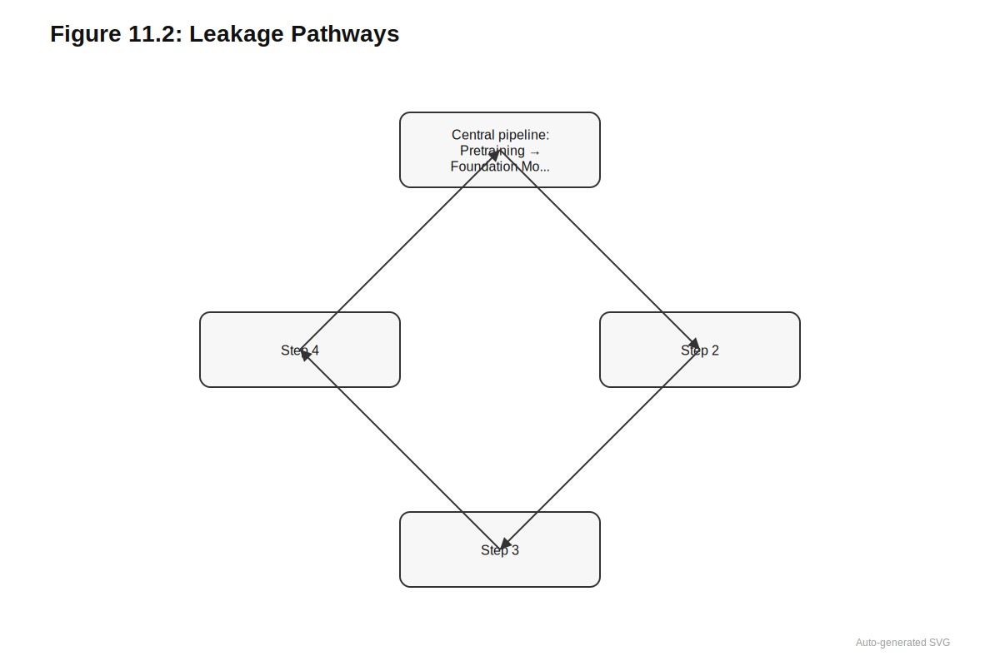
11.5.3 Metric Selection and Aggregation
Benchmark metrics determine what aspects of model performance are measured. Discrimination metrics (auROC, auPRC, correlation) assess whether models rank predictions correctly. Calibration metrics (expected calibration error, reliability diagrams) assess whether predicted probabilities match observed frequencies (Section 23.2). Clinical utility metrics (net benefit, decision curves) assess whether predictions improve decisions compared to treating all patients the same (Chapter 27).
Different metrics can yield different rankings of models. A model with superior discrimination may have poor calibration, predicting the right relative order but wrong absolute probabilities. Choosing which metric to optimize, and how to aggregate across multiple tasks or datasets, involves implicit decisions about what matters for downstream use.
Aggregation across tasks raises additional issues. Mean performance across many tasks weights each task equally, regardless of clinical importance or dataset quality. Median performance is robust to outliers but obscures variation. Reporting full distributions of task-level performance provides more information but complicates comparison. The choice of aggregation method can substantially affect which model appears best.
11.5.4 Goodhart’s Law and Benchmark Gaming
Benchmarks create incentive structures, and incentive structures invite optimization. Goodhart’s Law, that a measure ceases to be a good measure once it becomes a target, applies with particular force to machine learning evaluation. When model development prioritizes leaderboard position, the benchmark becomes the optimization target rather than a proxy for the underlying capability it was designed to measure.
Gaming takes multiple forms in genomic AI. Architectural choices may be tuned specifically to benchmark characteristics: receptive fields sized to match benchmark sequence lengths, output heads designed for benchmark label distributions, hyperparameters selected through extensive benchmark-specific search. Such tuning improves benchmark performance without necessarily improving generalization to deployment scenarios that differ from benchmark conditions.
More subtle gaming arises from selective reporting. Models may be evaluated on many benchmarks with only favorable results published. Benchmark versions may be chosen to maximize apparent performance. Evaluation protocols may deviate from published standards in ways that inflate metrics. The cumulative effect is a literature where reported performance systematically overestimates deployment capability.
The circularity between predictors and databases creates particularly insidious gaming dynamics. When ClinVar classifications incorporate computational predictions, and those predictions are then benchmarked against ClinVar, the benchmark rewards models that resemble their predecessors rather than models that provide independent information (Chapter 13). This circularity is rarely acknowledged in benchmark reporting, yet it fundamentally compromises the validity of performance claims.
Mitigating gaming requires structural changes to evaluation practice: prospective benchmarks like CAGI where predictions precede labels, held-out evaluation consortia that resist optimization pressure, and reporting standards that require disclosure of all benchmarks attempted rather than only those where performance was favorable. The field’s maturation depends on developing evaluation cultures that reward honest assessment over leaderboard position.
11.6 Benchmark Saturation and Staleness
Benchmarks have finite useful lifetimes. As models improve, benchmarks saturate; as data and methods evolve, benchmarks become stale.
11.6.1 Saturation: When Benchmarks Stop Discriminating
A benchmark saturates when the best models achieve performance that cannot be meaningfully improved. Saturation may reflect fundamental limits (the benchmark approaches the Bayes error rate), measurement noise (the benchmark’s labels are too noisy to support finer discrimination), or ceiling effects (the metric itself cannot distinguish between excellent and perfect performance).
Saturation is problematic because it removes the benchmark’s value for model selection. When all reasonable models achieve 0.97 auROC, differences between 0.970 and 0.975 are unlikely to reflect meaningful capability differences. Yet benchmark reporting conventions often emphasize such decimal places, creating an illusion of progress.
Detecting saturation requires estimating the irreducible error. For benchmarks with replicate measurements, comparing model performance to replicate concordance provides an upper bound: models cannot systematically outperform the reproducibility of the underlying assay. For benchmarks without replicates, saturation is harder to diagnose. One heuristic is tracking the rate of improvement: when new methods provide diminishing gains despite substantial architectural innovations, saturation is likely.
The response to saturation should be moving to harder benchmarks that still discriminate between methods, developing new benchmarks that capture aspects of performance that existing benchmarks miss, and retiring saturated benchmarks from active leaderboard competition while retaining them as sanity checks.
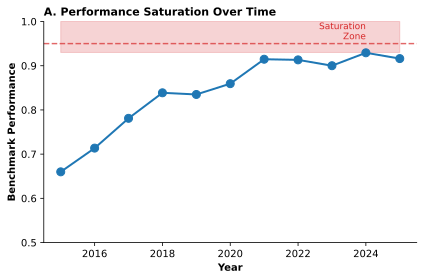
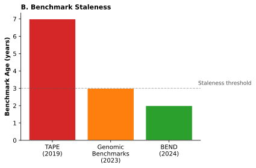
11.6.2 Staleness: When Benchmarks Diverge from Practice
Benchmarks become stale when they no longer reflect current data, methods, or clinical practice. Assays evolve: a benchmark constructed from early ENCODE data may not represent current experimental protocols. Annotations improve: gene models, variant classifications, and functional element maps are continuously updated. Clinical practice shifts: treatment guidelines and diagnostic criteria change the meaning of historical labels.
Staleness is insidious because it erodes benchmark validity gradually rather than abruptly. A benchmark that accurately represented regulatory prediction in 2015 may systematically misrepresent it in 2025, yet the benchmark’s continued use perpetuates optimization for an outdated target.
Addressing staleness requires periodic benchmark refresh with updated data and annotations, version control that documents exactly what each benchmark version contains, and awareness that performance on historical benchmarks may not predict performance on current data.
11.6.3 Leakage from Scale
Modern foundation models are pretrained on corpora that may include most publicly available genomic data. This creates novel leakage risks distinct from classical train-test overlap. A model pretrained on all ENCODE data may effectively have seen the exact experiments used in many regulatory benchmarks. A model pretrained on all UniRef may have seen sequences highly similar to protein benchmark test sets. This pretraining-benchmark overlap inflates performance in ways that are difficult to detect and even more difficult to correct.
Leakage from scale is particularly problematic because it is often undocumented. Model papers rarely enumerate exactly which datasets were included in pretraining corpora, and benchmark papers rarely specify which datasets should be excluded. The result is ambiguity about whether benchmark success reflects genuine generalization or memorization from pretraining.
Mitigating leakage from scale requires explicit documentation of pretraining corpora, tools or hashes that help identify overlap between pretraining data and benchmark test sets, and held-out evaluation consortia that reserve data specifically for assessment without any use in pretraining.
11.7 Benchmark-Deployment Gap
High benchmark performance does not guarantee deployment success. Understanding why requires examining the systematic differences between benchmark settings and real-world applications.
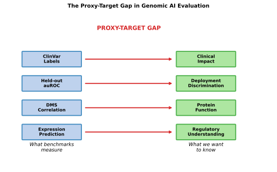
11.7.1 Distribution Shift
Benchmark test sets sample from the same distribution as training sets. Deployment populations may differ systematically. For variant effect prediction, benchmark variants are typically common enough to appear in multiple databases, while deployment often targets rare variants seen in single individuals. For regulatory prediction, benchmarks derive from well-studied cell types and tissues, while deployment may require prediction in understudied contexts.
Distribution shift manifests as degraded performance, but the pattern of degradation varies. The transfer learning framework in ?sec-ch09-domain-shift examines how models handle distribution shift from a methodological perspective, while Section 11.7.1 addresses the confounding implications when shift correlates with protected attributes. Some models degrade gracefully, maintaining reasonable accuracy across the distribution shift. Others degrade catastrophically, with confident predictions that prove systematically wrong. Benchmarks that include held-out subpopulations or out-of-distribution test sets provide some information about robustness, but cannot anticipate every deployment scenario.
11.7.2 Calibration Requirements
Clinical deployment requires not just accurate rankings but accurate probability estimates (Section 23.2). A variant classifier that achieves 0.95 auROC by assigning probability 0.9 to all pathogenic variants and 0.3 to all benign variants discriminates well but provides miscalibrated uncertainty. Clinical decisions that depend on thresholded predictions (reporting variants above a certain probability) will perform poorly if those probabilities do not reflect actual pathogenicity rates.
Most benchmark metrics emphasize discrimination over calibration. auROC is invariant to monotonic transformations of predicted probabilities. Correlation measures rank preservation. As a result, models may be optimized for benchmark success through strategies that damage calibration. The benchmark-deployment gap for calibration can be large even when discrimination metrics are excellent.
11.7.3 Metric Mismatch
Benchmarks optimize specific metrics that may not align with deployment objectives. auROC weights errors equally regardless of where they occur on the score distribution, but clinical utility may depend primarily on performance at specific operating points. Correlation rewards getting the overall pattern right but may not penalize systematic errors in clinically important regions.
The gap between optimized metrics and deployment objectives creates misaligned incentives. Model developers optimize for benchmark success, which rewards specific metric improvements. Deployment success may require different tradeoffs: prioritizing calibration over discrimination, minimizing false negatives over false positives, or performing well on specific subpopulations rather than overall.
11.7.4 Practical Constraints
Deployment environments impose constraints that benchmarks typically ignore. Inference speed matters when predictions must be returned in clinical timescales. Model size matters when deployment hardware has limited memory. Interpretability matters when predictions must be explained to clinicians or patients (Chapter 25). Benchmarks that evaluate only accuracy miss these dimensions of deployment fitness.
The benchmark-deployment gap is not merely a technical inconvenience. It represents a fundamental tension between evaluation tractability and deployment validity. Benchmarks are valuable precisely because they are standardized, reproducible, and comparable across methods. Deployment is valuable precisely because it addresses the specific needs of real-world applications. Bridging this gap requires benchmark designs that better approximate deployment conditions and deployment evaluations that provide feedback to benchmark development.
11.8 Systematic Gaps in Current Benchmarks
Despite the proliferation of benchmark suites, systematic gaps remain in the genomic evaluation landscape.
Variant types remain inadequately covered: structural variants, inversions, copy number variants, and complex rearrangements are rarely evaluated despite accounting for substantial genomic variation and disease burden (Section 1.5.4). Repeat regions are often excluded or masked. Multi-variant effects and haplotype-specific phenomena receive minimal attention; the phasing challenges that underlie compound heterozygosity interpretation (Section 1.4.1) rarely appear in benchmark settings.
Population representation shows profound disparities: non-European ancestry groups remain severely underrepresented (Section 3.7). The confounding implications of this underrepresentation extend beyond benchmark validity to fairness concerns examined in ?sec-ch22-fairness. Performance stratified by ancestry reveals gaps that aggregate metrics conceal. Environmental diversity (lifestyle, exposures, treatments) that shapes phenotypic expression is rarely incorporated.
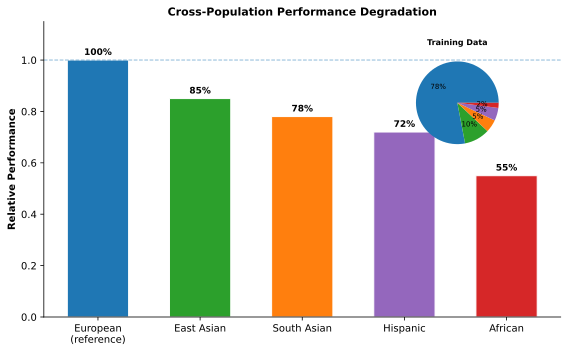
Modality coverage remains uneven: long-read sequencing data is scarce in benchmarks despite its advantages for structural variants and phasing (Section 1.2.4). Single-cell benchmarks are emerging but remain limited compared to bulk assay benchmarks; the evaluation challenges specific to single-cell models are examined in ?sec-ch16-evaluation. Spatial transcriptomics and other emerging modalities have minimal coverage, though multi-omic integration approaches (Chapter 22) are beginning to address cross-modality assessment.
Clinical endpoints are underrepresented: most benchmarks use molecular surrogates rather than hard clinical endpoints. Disease incidence, progression, treatment response, and patient-reported outcomes are rarely the direct prediction target. The gap between molecular proxy accuracy and clinical utility remains poorly characterized.
These gaps mean that strong benchmark performance may not predict utility for underserved populations, understudied variant classes, or clinical applications that depend on endpoints the benchmarks do not measure.
11.9 The Proxy Problem
Benchmarks structure the incentives of genomic AI development. The specific tasks, metrics, and leaderboards that the community adopts determine what models are optimized for, what claims of progress are evaluated against, and what capabilities receive attention versus neglect. A benchmark that emphasizes European-ancestry variants produces models tuned for European-ancestry performance. A benchmark that rewards discrimination (auROC) over calibration produces models that rank variants well but estimate probabilities poorly. A benchmark that reuses training data from widely available resources creates indirect leakage that inflates apparent performance. The benchmark landscape is not neutral infrastructure but an active force shaping what the field builds.
The landscape surveyed here spans protein benchmarks (TAPE, FLIP, ProteinGym), DNA and regulatory benchmarks (Genomic Benchmarks, BEND), variant effect benchmarks (ClinVar, CAGI, DMS), and trait-level benchmarks (TraitGym, EmbedGEM). Across all categories, persistent challenges emerge: saturation that reduces discriminative power as models approach ceiling performance, staleness that erodes validity as benchmarks age, leakage risks that inflate apparent capabilities, and systematic gaps in population diversity, variant type coverage, and clinical endpoint representation.
The benchmark-deployment gap represents perhaps the most consequential limitation. Strong performance on established benchmarks does not guarantee that models will behave reliably when deployed in clinical or research settings with different data distributions, patient populations, or outcome definitions. Proper benchmark use requires attention to experiment design, metric selection, and common pitfalls (Chapter 12). The confounding issues that plague both benchmark construction and model training receive dedicated treatment in Chapter 13, while uncertainty quantification methods (Chapter 23) provide tools for assessing when benchmark performance translates to deployment confidence. Interpretability approaches (Chapter 25) reveal whether benchmark success reflects genuine biological learning or exploitation of shortcuts. Together with this catalog of what benchmarks exist, these methodological principles provide the critical apparatus for evaluating genomic foundation model claims.
11.10 Evaluation Methodology
The preceding sections examined what benchmarks measure. This section examines how to evaluate models properly—the methodological foundations that determine whether benchmark results translate to deployment success.
The following sections on evaluation methodology require careful attention. The concepts of leakage, confounding, and proper experimental design are subtle but essential. A model developer who masters these principles will avoid the common pitfalls that produce misleading benchmark results. Take time with each section; the investment will pay dividends in every evaluation you conduct.
CD-HIT: Li W, Godzik A. Cd-hit: a fast program for clustering and comparing large sets of protein or nucleotide sequences. Bioinformatics. 2006;22(13):1658-1659. doi:10.1093/bioinformatics/btl158 MMseqs2: Steinegger M, Söding J. MMseqs2 enables sensitive protein sequence searching for the analysis of massive data sets. Nature Biotechnology. 2017;35(11):1026-1028. doi:10.1038/nbt.3988
Statistical Methods
DeLong’s method: DeLong ER, DeLong DM, Clarke-Pearson DL. Comparing the areas under two or more correlated receiver operating characteristic curves: a nonparametric approach. Biometrics. 1988;44(3):837-845. Benjamini-Hochberg procedure: Benjamini Y, Hochberg Y. Controlling the false discovery rate: a practical and powerful approach to multiple testing. Journal of the Royal Statistical Society, Series B. 1995;57(1):289-300. doi:10.1111/j.2517-6161.1995.tb02031.x
Kinship Estimation
KING: Manichaikul A, Mychaleckyj JC, Rich SS, Daly K, Sale M, Chen WM. Robust relationship inference in genome-wide association studies. Bioinformatics. 2010;26(22):2867-2873. doi:10.1093/bioinformatics/btq559
Calibration Methods
Platt scaling: Platt J. Probabilistic outputs for support vector machines and comparisons to regularized likelihood methods. Advances in Large Margin Classifiers. 1999;10(3):61-74. Temperature scaling: Guo C, Pleiss G, Sun Y, Weinberger KQ. On calibration of modern neural networks. Proceedings of the 34th International Conference on Machine Learning (ICML). 2017;70:1321-1330.
Optional (Twilight Zone Reference)
Twilight zone (30% sequence identity): Rost B. Twilight zone of protein sequence alignments. Protein Engineering. 1999;12(2):85-94. doi:10.1093/protein/12.2.85 :::
12 Evaluation Principles
Genomic data makes it exceptionally easy to fool yourself. Sequences share evolutionary history, so a model that memorizes training sequences may appear to generalize when tested on homologs. Variants cluster in families and populations, so ancestry-stratified performance can masquerade as genuine prediction. Experimental measurements carry batch effects invisible to the untrained eye, so a model can learn to distinguish sequencing centers rather than biological states. Training labels often derive from the very databases used for evaluation, creating circular validations that inflate performance without testing genuine predictive power. Every shortcut that simplifies evaluation in other machine learning domains becomes an opportunity for false confidence in genomics.
Random data splits that work perfectly well for natural images become actively misleading when applied to biological sequences. A protein held out for testing may share 90% sequence identity with a training protein, allowing the model to succeed through memorization rather than generalization. A variant classified as pathogenic in the test set may come from the same gene family as training variants, letting the model exploit gene-level signals rather than learning variant-specific effects. A cell line in the test set may have been processed at the same sequencing center as training samples, enabling the model to recognize batch signatures rather than biological patterns. These leakages are not hypothetical; they have inflated reported performance across the genomic machine learning literature.
The difference between valid and misleading evaluation often lies not in benchmark choice but in methodological details: data splitting strategies, metric selection, baseline comparisons, ablation designs, and statistical testing. Chapter 11 catalogs what benchmark tasks exist, how they are constructed, and what capabilities they probe. The complementary question: given a benchmark, how do we apply it to produce trustworthy results? The difference between valid and misleading evaluation often lies not in benchmark choice but in methodological details: data splitting strategies, metric selection, baseline comparisons, ablation designs, and statistical testing. These principles apply across all benchmark categories, from chromatin state prediction to clinical variant classification. By mastering evaluation methodology, practitioners can distinguish genuine advances from artifacts that will not survive deployment.
12.1 Why Random Splits Fail
The standard machine learning recipe calls for randomly partitioning data into training, validation, and test sets. For image classification or sentiment analysis, this approach works well because individual examples are approximately independent. A photograph of a cat shares no special relationship with another photograph of a different cat beyond their common label. Random assignment ensures that training and test distributions match, and performance on the test set provides an unbiased estimate of performance on new examples from the same distribution.
Genomic data violates these assumptions at every level. Consider a protein dataset where the goal is to predict stability from sequence. Proteins in the same family share evolutionary history and often similar structures. If a training set includes beta-lactamase variants from E. coli and the test set includes beta-lactamase variants from Klebsiella, the model may appear to generalize to “new” proteins while actually recognizing sequence patterns it saw during training. The test performance reflects memorization of family-specific features rather than general principles of protein stability.
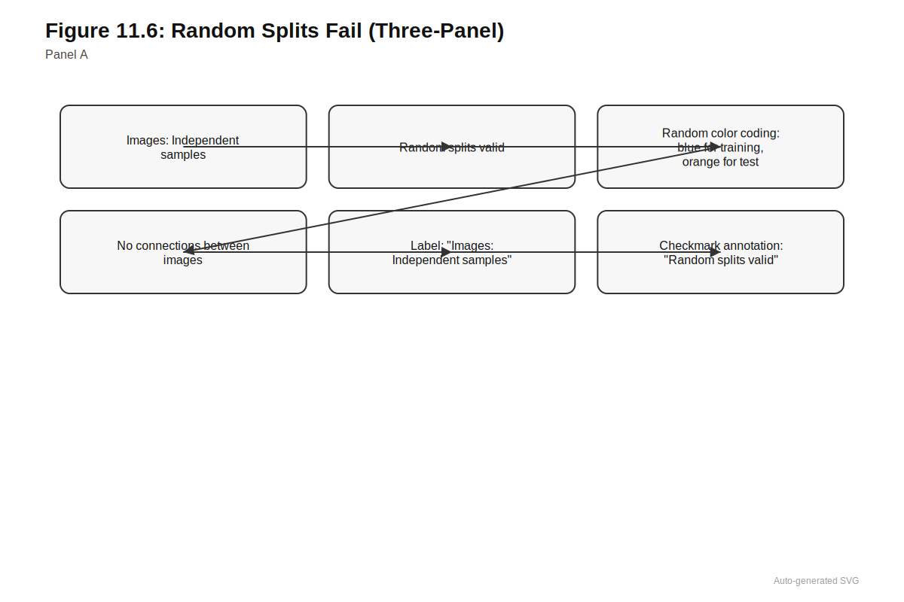

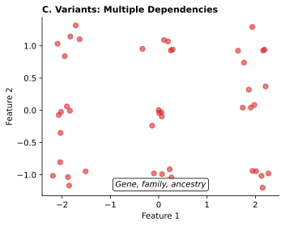
The problem compounds when sequence identity is high. Two proteins sharing 80% sequence identity will typically have similar structures and functions. A model trained on one and tested on the other is not really being tested on a novel example; it is being asked to interpolate within a region of sequence space it has already explored. Even at 30% sequence identity, the so-called “twilight zone” of homology detection (rost_twilight_1999?), proteins often share structural and functional similarities that can be exploited by sufficiently powerful models.
Variant-level data presents analogous challenges. Variants within the same gene share genomic context, and variants affecting the same protein domain share structural environment. Variants from the same individual share haplotype background. Variants from the same population share allele frequency distributions shaped by demographic history. Each of these relationships creates opportunities for models to learn shortcuts that generalize within the training distribution but fail on genuinely novel examples.
The fundamental issue is that genomic data points are not independent. Random splits assume independence; when this assumption is violated, the test set no longer provides an unbiased estimate of generalization. The consequence is systematic overestimation of performance. A model that achieves 0.90 auROC with random splitting might achieve only 0.75 auROC when evaluated on truly held-out examples, with the gap reflecting how much the model learned about biology versus how much it learned about the structure of the training data.
12.2 Homology-Aware Splitting
The solution to homology-driven leakage is to explicitly account for sequence similarity when constructing data splits. Rather than random assignment, examples are clustered by sequence identity, and entire clusters are assigned to training, validation, or test sets. This ensures that no test example is “too similar” to any training example, forcing the model to demonstrate genuine generalization.

12.2.1 Clustering Tools and Workflows
Two tools dominate homology-aware splitting in practice. CD-HIT clusters sequences by greedy incremental clustering, assigning each sequence to an existing cluster if it exceeds a similarity threshold to the cluster representative, or creating a new cluster otherwise (li_cd-hit_2006?). The algorithm is fast and scales to millions of sequences. For proteins, a typical workflow clusters at 40% sequence identity for stringent splitting or 70% for moderate splitting. For nucleotide sequences, thresholds are typically higher (80-95%) due to different evolutionary rates.
MMseqs2 offers faster clustering with similar sensitivity, becoming essential for large-scale analyses (steinegger_mmseqs2_2017?). The tool supports multiple clustering modes and can handle databases with hundreds of millions of sequences. For foundation model pretraining where deduplication affects billions of sequences, MMseqs2 is often the only practical option.
The choice of identity threshold involves trade-offs:
| Threshold | Proteins | Nucleotides | Trade-off |
|---|---|---|---|
| Stringent | 30-40% | 80-85% | Hardest test; may lack training data |
| Moderate | 50-70% | 85-90% | Balanced; typical benchmark choice |
| Permissive | 80-90% | 95%+ | Retains data but allows some leakage |
Rule of thumb for proteins: Use 40% identity for variant effect prediction, 30% for structure prediction (where even distant homologs share structure).
Rule of thumb for DNA: Use 80% for regulatory prediction, but consider gene-family splits instead of sequence identity alone.
12.2.2 Practical Considerations
Several subtleties affect the quality of homology-aware splits. When one cluster contains half the data and is assigned to training, the remaining clusters may be too small or too biased to serve as representative test sets. This cluster size distribution problem can be mitigated through stratified sampling within clusters or careful balancing across splits, ensuring that test sets contain sufficient examples across the label distribution.
Pairwise clustering can miss hidden relationships that arise through transitive homology. Protein A may share 35% identity with protein B, and protein B may share 35% identity with protein C, yet A and C share only 20% identity. If A is in training and C is in testing, B serves as an indirect bridge that allows information to leak between splits despite no direct high-identity pair spanning them. Connected component analysis or multi-step clustering can address these transitive relationships, though at increased computational cost.
Multi-domain proteins complicate whole-protein clustering because different domains may have different evolutionary histories. A protein may share one domain with training proteins and another domain with test proteins. Whether this represents leakage depends on the prediction task: if predicting whole-protein function, shared domains matter; if predicting domain-specific properties, they matter more acutely. Domain-aware splitting assigns domains rather than whole proteins to clusters, though this requires domain annotation that may not always be available.
For genomic (non-protein) sequences, repeat elements and transposable elements create analogous challenges. A model trained to predict chromatin state may learn features of LINE elements that recur throughout the genome. Excluding repetitive regions from evaluation or explicitly accounting for repeat content can clarify what the model has actually learned about regulatory sequences versus repetitive element patterns.
12.3 Splitting by Biological Axis
Beyond sequence homology, genomic data admits multiple axes along which splits can be constructed. The choice of axis determines what kind of generalization is being tested.
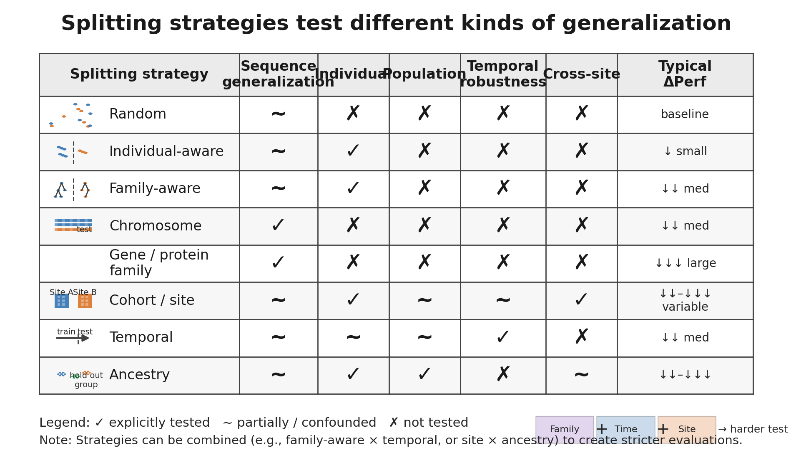
12.3.1 Splitting by Individual
For tasks involving human genetic variation, ensuring that data from the same individual (or related individuals) does not appear in both training and test sets is essential. A variant effect predictor trained on variants from person A and tested on other variants from person A may learn individual-specific patterns, such as haplotype structure or ancestry-correlated allele frequencies, that do not generalize to new individuals.
Family structure creates subtler leakage. First-degree relatives share approximately 50% of their genomes identical by descent. Even distant relatives share genomic segments that can be exploited by sufficiently powerful models. Best practice involves computing kinship coefficients across all individuals and either excluding one member of each related pair or assigning entire family clusters to the same split. The UK Biobank provides pre-computed relatedness estimates; other cohorts may require explicit calculation using tools like KING or PLINK. [Citation Needed]
12.3.2 Splitting by Genomic Region
Chromosome-based splits assign entire chromosomes to training or testing. This approach is common in regulatory genomics, where models trained on chromosomes 1-16 are tested on chromosomes 17-22 (or similar partitions). The advantage is simplicity and reproducibility; the disadvantage is that chromosomes are not independent. Chromosome 6 contains the HLA region with its unusual patterns of variation and selection; chromosome 21 is small and gene-poor; sex chromosomes have distinct biology. Results may vary substantially depending on which chromosomes are held out.
Region-based splits hold out contiguous segments (e.g., 1 Mb windows) distributed across the genome. This provides more uniform coverage than chromosome splits but requires careful attention to boundary effects. If a regulatory element spans the boundary between training and test regions, parts of its context may leak into training.
12.3.3 Splitting by Gene or Protein Family
For variant effect prediction, holding out entire genes or protein families tests whether models learn general principles versus gene-specific patterns. A model that achieves high accuracy by memorizing that TP53 variants are often pathogenic has not demonstrated understanding of mutational mechanisms. Gene-level splits force models to generalize to genes they have never seen, providing stronger evidence of biological insight.
Family-level splits extend this logic to groups of related genes. Holding out all kinases or all GPCRs tests whether models can generalize across evolutionary families. This is particularly stringent for protein structure and function prediction, where family membership strongly predicts properties.
Consider a project to predict whether coding variants cause loss of protein function. You have variants from 1000 genes, with 50-100 variants per gene. Which splitting strategy would you choose, and why?
A. Random split (80/10/10) B. Chromosome-based (train on chr1-18, test on chr19-22) C. Gene-based (train on 800 genes, test on 200 held-out genes) D. Individual-based (split by patient ID)
Consider: What would each split actually test? Which shortcuts could models exploit?
12.3.4 Splitting by Experimental Context
Multi-task models that predict chromatin marks across cell types can be split by cell type rather than genomic position. Training on liver, lung, and brain while testing on heart and kidney assesses whether learned regulatory logic transfers across tissues. This matters because cell-type-specific factors drive much of regulatory variation; a model that has simply learned which regions are accessible in the training cell types may fail on novel cell types even when sequence features should transfer.
Similarly, models can be split by assay type (e.g., training on ATAC-seq, testing on DNase-seq), laboratory (to assess batch effects), or time point (for longitudinal data). Each split tests a different axis of generalization.
12.3.5 Splitting by Ancestry
For human genomic applications, ancestry-stratified evaluation has become essential. Models trained predominantly on European ancestry cohorts often show degraded performance in African, East Asian, South Asian, and admixed populations. This degradation reflects both differences in allele frequency spectra and differences in linkage disequilibrium patterns that affect which variants are informative.
Best practice reports performance separately for each major ancestry group represented in the data. When held-out ancestry groups are available (e.g., training on Europeans and testing on Africans), this provides the strongest test of cross-population generalization. When only European data are available, this limitation should be explicitly acknowledged, and claims about generalization should be appropriately modest. The confounding effects of ancestry on genomic predictions are detailed in Chapter 13.
12.3.6 Splitting by Time
Temporal splits assign data to training and test sets based on when observations were collected, annotations were created, or variants were classified. This strategy tests whether models generalize forward in time, the actual deployment scenario for any predictive system.
For variant pathogenicity prediction, temporal splits are particularly revealing. ClinVar (Section 2.8.1) provides submission dates enabling clean temporal partitioning. Training on ClinVar annotations from 2018 and testing on variants first classified in 2022 asks whether the model can predict labels that did not yet exist during training. This avoids the circularity that arises when training and test labels were assigned by similar processes at similar times. Variants classified more recently may reflect updated curation standards, new functional evidence, or reclassifications of previously uncertain variants; a model that performs well on these genuinely new classifications demonstrates predictive validity rather than recapitulation of historical curation patterns.
Implementing temporal splits requires metadata that many datasets lack. ClinVar provides submission dates, enabling clean temporal partitioning. UniProt tracks annotation dates for functional assignments. Clinical cohorts with longitudinal follow-up naturally admit temporal splits based on diagnosis dates. When temporal metadata is unavailable, publication dates of source literature can serve as proxies, though these may not perfectly reflect when information became available to model developers.
The key limitation of temporal splits is non-stationarity. The distribution of variants classified in 2022 may differ systematically from those classified in 2018, not because biology changed but because research priorities, sequencing technologies, and ascertainment patterns evolved. Performance degradation on temporally held-out data may reflect distribution shift rather than genuine failure to generalize. Combining temporal splits with stratified analysis (performance by variant type, gene category, or evidence strength) helps disentangle these factors.
12.4 Leakage Taxonomy and Detection
Even with careful splitting, leakage can enter evaluations through multiple pathways. A variant effect predictor that achieves 0.95 auROC on held-out test data may be exploiting information that would never exist for truly novel variants, rendering the performance estimate meaningless for clinical deployment. Understanding common leakage patterns helps practitioners design cleaner evaluations and critically assess published results.
Genomic machine learning faces four distinct leakage types, each creating different pathways for inflated performance: label leakage, feature leakage, temporal leakage, and benchmark leakage. These categories are not mutually exclusive; a single evaluation may suffer from multiple forms simultaneously, with compounding effects on apparent performance.
| Leakage Type | Definition | Example | Detection Strategy |
|---|---|---|---|
| Label leakage | Target labels derived from features the model can access | ClinVar classifications informed by SIFT/PolyPhen scores | Compare to baseline using only those features |
| Feature leakage | Input features encode future or target information | Conservation scores for pathogenicity prediction | Ablate suspicious features; measure degradation |
| Temporal leakage | Using future information to predict past | Training on 2023 labels to predict 2020 classifications | Strict temporal splits with date metadata |
| Benchmark leakage | Test set construction influenced by evaluated methods | Benchmark selected proteins with good sequence coverage | Check benchmark construction procedure |
12.4.1 Label Leakage
Label leakage occurs when target labels are derived from information that the model can access through its features. The classic example is training pathogenicity predictors on ClinVar annotations while using sequence features that contributed to those annotations. If ClinVar curators used SIFT and PolyPhen scores when classifying variants, and the new model uses similar sequence features, high performance may reflect recapitulation of curation criteria rather than independent predictive power.
The ClinVar circularity problem represents a particularly insidious form of label leakage. When computational predictions contributed to the pathogenicity classifications that later become training labels, new models learn to replicate their predecessors rather than discover independent signal. This circularity propagates through generations of models, each inheriting and reinforcing the biases of earlier predictors. The circularity problem for classical variant effect predictors is examined in Section 4.5, with broader treatment of how such label contamination creates confounded evaluations in ?sec-ch22-label-bias.
Expression models face analogous challenges when trained on features derived from the same samples used to define expression labels. The information flow becomes circular: labels inform features, which predict labels, creating apparent performance that would not generalize to independent samples.
12.4.2 Feature Leakage
Feature leakage occurs when input features encode information about the target that would not be available at prediction time. In genomics, conservation scores are a common source. If a model uses PhyloP scores as features and the target is pathogenicity, the model may learn that conserved positions are more likely pathogenic without learning anything about variant-specific biology. This would be appropriate if conservation scores are intended to be part of the prediction pipeline, but problematic if the goal is to develop a model that predicts pathogenicity from sequence alone.
Similarly, population allele frequency encodes selection pressure. A model that learns “rare variants are more likely pathogenic” has discovered a useful heuristic but not necessarily mechanistic understanding. Whether this counts as leakage depends on the intended use case. For clinical variant interpretation where allele frequency is always available, exploiting this feature is appropriate. For understanding variant biology, it may mask whether the model has learned anything beyond frequency-based priors.
Feature leakage also arises when features encode information about data partitions or batch structure rather than biology. Coverage patterns that differ systematically between cases and controls, quality metrics that correlate with sequencing center, or variant density profiles that reflect caller-specific behavior all constitute feature leakage of this form.
12.4.3 Temporal Leakage
Temporal leakage violates the causal structure of prediction by using future information to predict past events. A model trained on ClinVar annotations from 2023 and tested on annotations that were uncertain in 2020 may perform well because new annotations were informed by model-like predictions. The apparent validation is circular: the model predicts labels that were partially derived from model-like reasoning applied after the prediction timepoint.
Clinical outcome prediction faces similar risks when laboratory values, imaging results, or clinical notes recorded after the prediction timepoint enter the feature set. A model predicting 30-day mortality that includes vital signs from day 15 has trivial access to outcome-correlated information. Proper temporal splits must respect not only when samples were collected but when each feature became available.
Training on variants classified in 2023 to predict classifications that were uncertain in 2020 allows models to learn from reclassification patterns rather than intrinsic variant properties. The model exploits the trajectory of scientific knowledge rather than the underlying biology.
12.4.4 Benchmark Leakage
Benchmark leakage occurs when test set construction was influenced by methods similar to those being evaluated. If a protein function benchmark was created by selecting proteins with high-confidence annotations, and those annotations were partly derived from sequence similarity searches, sequence-based models may perform well by exploiting the same similarity that guided benchmark construction.
Foundation models face particular challenges with benchmark leakage. If a DNA language model is pretrained on all publicly available genomic sequence including ENCODE data, and then evaluated on ENCODE-derived benchmarks, the pretraining has exposed the model to information about the test distribution even if specific test examples were held out. The model may have learned statistical patterns in ENCODE data that transfer to ENCODE benchmarks without reflecting genuine biological understanding.
This form of leakage is especially difficult to detect because it operates at the level of distributional overlap rather than specific example memorization. A model that has never seen a particular test sequence may still have learned the statistical regularities that make that sequence predictable within the benchmark distribution.
12.4.5 Detecting Leakage
Several strategies help detect leakage, though none provides definitive proof of its absence. These approaches complement each other; rigorous evaluation employs multiple strategies, recognizing that each catches different leakage pathways while remaining blind to others.
When evaluating your own model or reviewing published results, work through these detection strategies:
Baseline analysis: Does a simple model using only potentially leaky features (allele frequency, conservation) achieve similar performance?
Feature ablation: Does removing suspicious features cause dramatic performance drops?
Confounder analysis: Does performance remain after conditioning on potential confounders (gene, ancestry, batch)?
Temporal validation: Does performance hold on prospectively collected data?
Overlap audit: Has the overlap between pretraining data and benchmark test sets been documented and checked?
Simple models that could not plausibly have learned biology provide an essential baseline analysis. If a linear model using only allele frequency achieves 0.80 auROC on a pathogenicity benchmark, and a sophisticated deep model achieves 0.82, the marginal improvement may not justify claims of biological insight. The deep model’s performance is bounded by what simple confounders already explain.
Systematic feature ablation removes potentially leaky features and measures performance degradation. If removing conservation scores causes a 20-point drop in auROC, the model was heavily dependent on conservation rather than learning independent predictors. This approach identifies which features drive performance but cannot distinguish legitimate signal from leakage without domain knowledge about what information should be available at prediction time.
Explicit confounder analysis models potential confounders and tests whether model predictions remain informative after conditioning. If a variant effect predictor’s scores become non-predictive after controlling for gene length and expression level, the model may have learned gene-level confounders rather than variant-level effects. Chapter 13 examines how leakage relates to these broader confounding structures.
Temporal validation evaluates models on data collected after the training data was frozen. If performance degrades substantially on newer data, the model may have been fitted to temporal artifacts in the original dataset. This approach is particularly valuable for detecting temporal leakage but requires access to prospectively collected data.
Finally, overlap auditing explicitly checks for sequence or sample overlap between pretraining corpora and evaluation benchmarks. For foundation models, this requires documenting pretraining data composition and comparing against benchmark construction procedures. The audit may reveal that apparent generalization is actually interpolation within seen distributions.
12.5 Metrics for Genomic Tasks
Metrics quantify model performance but different metrics answer different questions. Choosing appropriate metrics requires clarity about what aspect of performance matters for the intended application.

12.5.1 Discrimination Metrics
For binary outcomes (pathogenic versus benign, bound versus unbound, accessible versus closed), discrimination metrics assess how well the model separates classes. The auROC measures the probability that a randomly selected positive example is ranked above a randomly selected negative example. auROC is threshold-independent and widely reported but can be misleading when classes are highly imbalanced.
The auPRC better reflects performance when positives are rare. For variant pathogenicity prediction, where perhaps 1% of variants are truly pathogenic, a model achieving 0.95 auROC might still have poor precision at useful recall levels. auPRC directly captures the precision-recall trade-off that matters for applications requiring both high sensitivity and manageable false positive rates.
The distinction between auROC and auPRC reflects a mathematical property with practical consequences:
- auROC is invariant to class imbalance: A model’s auROC remains identical whether 1% or 50% of examples are positive, because it measures pairwise ranking between one positive and one negative.
- This invariance becomes a liability in deployment: A model with 0.95 auROC applied to a dataset where 0.1% of variants are pathogenic might flag 100 false positives for every true positive at a threshold capturing 80% of positives.
Rule of thumb: Report both auROC (for comparison across datasets) and auPRC (for realistic assessment of deployment utility). When in doubt, auPRC is the more honest metric for imbalanced problems.
This same invariance becomes a liability when evaluating for deployment. A model with 0.95 auROC applied to a dataset where 0.1% of variants are pathogenic might flag 100 false positives for every true pathogenic variant at a threshold capturing 80% of positives. The auROC provides no warning of this behavior because it treats a positive-to-negative pair the same regardless of how many negatives exist. For any application where false positives carry real costs (manual curation, clinical follow-up, unnecessary patient anxiety), auROC presents an optimistic picture that collapses upon deployment.
auPRC explicitly accounts for the negative class size. When positives are rare, achieving high precision requires a model that scores the vast majority of negatives lower than positives, not just a typical negative. This makes auPRC sensitive to class imbalance in exactly the way deployment is sensitive to class imbalance. A model moving from a balanced benchmark to a 1000:1 imbalanced application will show stable auROC but declining auPRC, mirroring the actual increase in false discovery rate users will experience. For this reason, auPRC (or equivalently, average precision) should be the primary metric when the deployment class distribution is known and imbalanced.
Threshold-dependent metrics including sensitivity, specificity, positive predictive value, and negative predictive value require specifying a decision threshold. These metrics are more interpretable for specific use cases (e.g., “the model identifies 90% of pathogenic variants while flagging only 5% of benign variants as false positives”) but require choosing thresholds that may not generalize across settings.
12.5.2 Regression and Correlation Metrics
For continuous predictions (expression levels, effect sizes, binding affinities), correlation metrics assess agreement between predicted and observed values. Pearson correlation measures linear association; Spearman correlation measures rank association and is robust to nonlinear relationships. The coefficient of determination (\(R^2\)) measures variance explained, though interpretation requires care when baseline performance is near zero.
For predictions at genomic scale (e.g., predicted versus observed expression across thousands of genes), these metrics may obscure important patterns. A model might achieve high genome-wide correlation by correctly predicting which genes are highly expressed while failing on the genes where predictions matter most. Task-specific stratification, such as correlation within expression quantiles or among disease-relevant genes, provides more actionable information.
12.5.3 Ranking and Prioritization Metrics
Many genomic workflows care about ranking rather than absolute prediction. Variant prioritization pipelines rank candidates for follow-up; gene prioritization ranks targets for experimental validation. Top-k recall measures the fraction of true positives captured in the top \(k\) predictions. Enrichment at k compares the true positive rate in the top \(k\) to the background rate. Normalized discounted cumulative gain (NDCG) weights ranking quality by position, penalizing relevant items placed lower in the list more than those placed near the top.
These metrics align with how predictions are actually used. If experimental capacity permits validating only 20 variants per locus, top-20 recall matters more than global auROC. Reporting both global metrics and rank-aware metrics at relevant cutoffs provides a complete picture.
12.5.4 Clinical Utility Metrics
For clinical applications, discrimination and calibration are necessary but not sufficient. Decision curves plot net benefit across decision thresholds, where net benefit weighs the value of true positives against the cost of false positives at each threshold. A model may achieve high auROC but offer no net benefit at clinically relevant thresholds if it fails to discriminate in the region where decisions are actually made.
Net reclassification improvement (NRI) measures how often adding genomic features to a clinical model changes risk classifications in the correct direction. This directly addresses whether genomics adds clinical value beyond existing predictors. Chapter 27 provides detailed treatment of clinical evaluation frameworks.
12.6 Baseline Selection
Baseline comparisons determine the meaning of reported performance. A model achieving 0.85 auROC might represent a major advance if the best prior method achieved 0.70, or a trivial improvement if simple heuristics achieve 0.83. Choosing appropriate baselines is as important as choosing appropriate metrics.
12.6.1 Strong Baselines, Not Straw Men
The temptation to compare against weak baselines inflates apparent contributions. A deep learning model compared against a naive prior or a deliberately crippled baseline will appear impressive regardless of whether it offers genuine value. Strong baselines force honest assessment of improvement.
For sequence-based predictions, position weight matrices (PWMs) and k-mer logistic regression provide classical baselines that capture sequence composition without deep learning. If a convolutional model barely outperforms logistic regression on k-mer counts, the convolutional architecture may not be contributing as much as claimed.
For variant effect prediction, simple features like allele frequency, conservation scores, and amino acid properties provide baselines that any sophisticated model should substantially exceed. CADD (Section 4.3) serves as a well-calibrated baseline that combines many hand-crafted features; outperforming CADD demonstrates that learning provides value beyond feature engineering.
For foundation models, comparisons should include both randomly initialized models of similar architecture (to isolate the value of pretraining) and simpler pretrained models (to isolate the value of scale or architectural innovations). Claiming that pretraining helps requires demonstrating improvement over training from scratch on the same downstream data.
For each scenario, identify the appropriate baseline:
- A new DNA language model claims to predict TF binding sites better than previous approaches. What baselines should it beat?
- A variant pathogenicity predictor claims state-of-the-art performance. What would a “straw man” comparison look like, and what would a rigorous comparison include?
- A foundation model claims that pretraining improves downstream performance. What comparison demonstrates the value of pretraining specifically?
12.6.2 Historical Baselines and Progress Tracking
Comparing to methods from five years ago may demonstrate progress but overstates the contribution of any single method. Comparisons should include the best currently available alternatives, not just historically important ones. When prior work is not directly comparable (different data, different splits, different metrics), reimplementing baselines on common benchmarks provides fairer comparison.
Field-wide progress tracking benefits from persistent benchmarks with frozen test sets. Once test set results for a benchmark are published, that benchmark becomes less useful for future model development because the test set is no longer truly held out. Periodic benchmark refresh with new held-out data helps maintain evaluation integrity.
12.6.3 Non-Deep-Learning Baselines
Deep learning models should be compared against strong non-deep alternatives. Gradient-boosted trees, random forests, and regularized linear models often achieve competitive performance with far less computation. If a 100-million-parameter transformer barely outperforms XGBoost on tabular features, the complexity may not be justified.
This comparison is especially important for clinical deployment, where simpler models may be preferred for interpretability, computational efficiency, or regulatory approval. Demonstrating that deep learning provides substantial gains over strong non-deep baselines strengthens the case for adoption.
12.7 Ablation Studies
Ablation studies systematically remove or modify model components to understand their contributions. Where baselines compare across methods, ablations investigate within a method, revealing which design choices actually matter.
12.7.1 Component Isolation
Standard ablations remove individual components: attention layers, skip connections, normalization schemes, specific input features. If removing attention heads causes minimal performance degradation, the model may not be exploiting long-range dependencies as claimed. If removing a particular input modality has no effect, that modality may not be contributing useful information.
Ablations should be designed to test specific hypotheses. If the claim is that a foundation model learns biologically meaningful representations, ablating pretraining (comparing to random initialization) directly tests this claim. If the claim is that cross-attention between modalities enables integration, ablating cross-attention while retaining separate encoders tests whether integration provides value.
12.7.2 Hyperparameter Sensitivity
Reporting performance across hyperparameter ranges reveals robustness. A model that achieves state-of-the-art performance only at a narrow learning rate range with specific regularization may be overfit to the evaluation setup. Consistent performance across reasonable hyperparameter variations provides stronger evidence of genuine capability.
12.7.3 Architecture Search Confounds
When model development involves extensive architecture search, reported performance conflates the value of the final architecture with the value of search on the validation set. The validation set is no longer truly held out; it has been used to select among architectures. Final evaluation on a completely untouched test set, with the architecture fixed before test set examination, provides cleaner assessment.
12.7.4 Reporting Standards
Ablation tables should clearly indicate what was changed in each condition, the number of random seeds or runs, and measures of variance. Single-run ablations can produce misleading results due to training stochasticity. Reporting means and standard deviations across multiple runs reveals whether observed differences exceed random variation.
12.8 Statistical Rigor
Performance differences between models may reflect genuine capability differences or random variation in training and evaluation. Statistical analysis distinguishes signal from noise.
12.8.1 Significance Testing
For classification metrics, significance tests ask whether observed differences exceed what would be expected from sampling variation. Bootstrap confidence intervals resample the test set with replacement, recompute metrics on each resample, and report the distribution of metric values. Non-overlapping 95% confidence intervals suggest significant differences. Permutation tests shuffle predictions between models and measure how often shuffled differences exceed observed differences.
For comparing multiple models across multiple benchmarks, correction for multiple testing becomes important. Without correction, 20 pairwise comparisons will produce an expected one false positive at the 0.05 level even when all models perform equally. The Bonferroni correction divides the significance threshold by the number of tests; the Benjamini-Hochberg procedure controls false discovery rate with more power than Bonferroni. [Citation Needed]
12.8.2 Effect Sizes
Statistical significance does not imply practical significance. A difference of 0.001 auROC might be statistically significant with millions of test examples while being practically meaningless. Effect sizes quantify the magnitude of differences independent of sample size. Cohen’s d for continuous outcomes and odds ratios for binary outcomes provide standardized measures of effect magnitude.
Reporting both significance tests and effect sizes provides complete information. A result that is statistically significant with a tiny effect size warrants different interpretation than one that is significant with a large effect size.
12.8.3 Confidence Intervals on Metrics
Point estimates of auROC or correlation should be accompanied by confidence intervals. DeLong’s method provides analytical confidence intervals for auROC (delong_comparing_1988?); bootstrap methods provide distribution-free intervals for any metric. Reporting “auROC = \(0.85\) (95% CI: \(0.82\)–\(0.88\))” is more informative than “auROC = \(0.85\)” alone.
12.8.4 Variance Across Random Seeds
Deep learning models are sensitive to initialization and optimization stochasticity. Training the same architecture with different random seeds can produce substantially different results. Best practice trains multiple runs and reports means and standard deviations. If the standard deviation across runs exceeds the difference between methods, claimed improvements may not be reproducible.
12.9 Evaluating Foundation Models
Genomic foundation models (Chapter 14) admit multiple evaluation paradigms, each testing different aspects of learned representations.

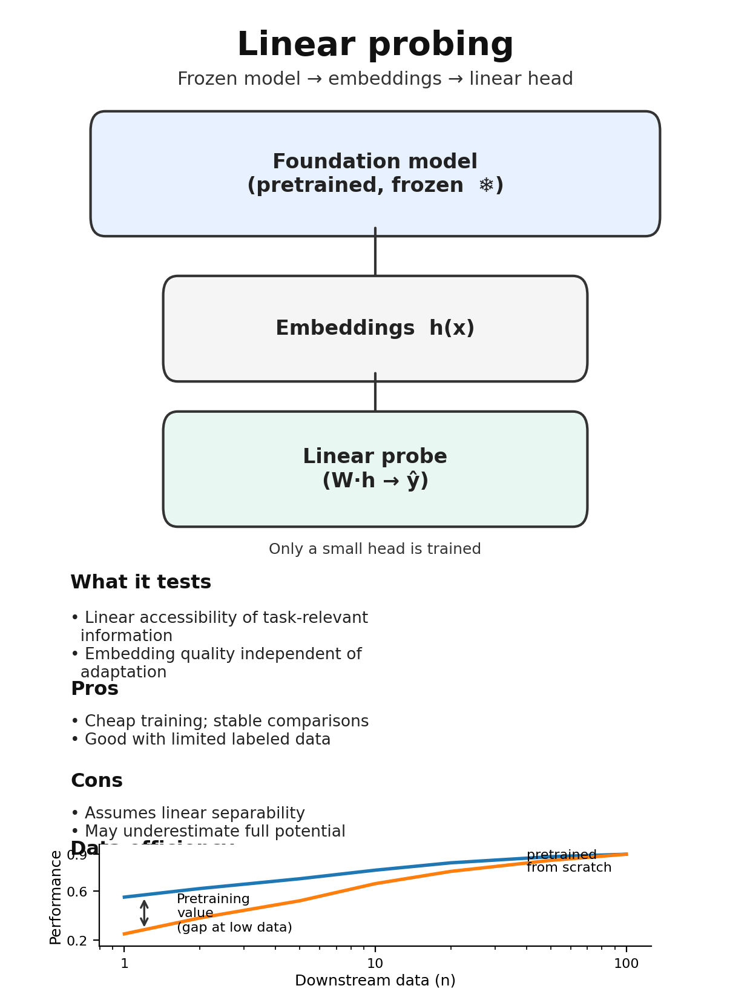
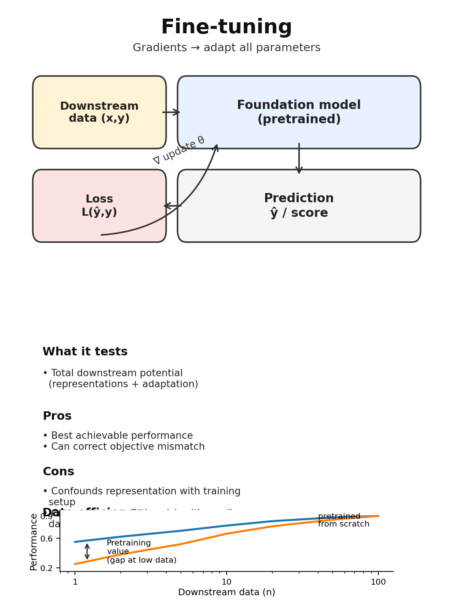
12.9.1 Zero-Shot Evaluation
In zero-shot evaluation, the pretrained model is applied without any task-specific training. For masked language models, this typically means using token probabilities to score variants or classify sequences. A variant that disrupts a position the model predicts with high confidence may indicate functional importance.
Zero-shot performance tests whether pretraining captures task-relevant structure without explicit supervision. Strong zero-shot performance suggests the pretraining objective aligned with the evaluation task; weak zero-shot performance suggests misalignment. Comparing zero-shot performance to simple baselines (e.g., conservation scores for variant effects) calibrates whether the foundation model provides value beyond what simpler approaches achieve.
12.9.2 Linear Probing
Linear probing freezes the foundation model and trains only a linear classifier on extracted embeddings. This isolates representation quality from fine-tuning capacity. If a linear probe on foundation model embeddings substantially outperforms a linear probe on random embeddings, the foundation model has learned useful features.
Layer-wise probing reveals where information is encoded. Early layers may capture local sequence features while later layers capture more abstract patterns. If the information needed for a task is extractable from early layers, the model may not require the full depth of the architecture for that application.
12.9.3 Fine-Tuning Evaluation
Full fine-tuning adapts all model parameters to the downstream task. This provides the best performance but conflates representation quality with adaptation capacity. A foundation model might achieve high fine-tuned performance through the capacity of its architecture rather than the quality of its pretrained representations.
Comparing fine-tuned foundation models to equivalently architected models trained from scratch isolates the value of pretraining. If both approaches converge to similar performance given sufficient downstream data, pretraining provides label efficiency (less data needed to reach a given performance level) rather than improved final performance. Data efficiency curves, plotting performance against downstream training set size, reveal this trade-off.
12.9.4 Transfer Across Tasks
Foundation models justify their “foundation” designation by transferring to diverse downstream tasks. Evaluating on a single task, however well-designed, cannot assess breadth of transfer. Multi-task evaluation across regulatory prediction, variant effects, protein properties, and other applications reveals whether foundation models provide general-purpose representations or excel only on tasks similar to their pretraining objective.
Transfer across species, tissues, and experimental modalities provides additional evidence of generalization. A DNA language model that transfers from human to mouse, or from blood cells to neurons, demonstrates that its representations capture biological principles rather than species-specific or tissue-specific patterns.
12.10 Calibration Essentials
Strong discrimination does not guarantee useful probability estimates. A model achieving 0.95 auROC might assign probability 0.99 to all positive examples and 0.98 to all negatives, ranking perfectly while providing meaningless confidence values. Clinical decision-making requires both: accurate ranking to identify high-risk variants and accurate probabilities to inform the weight of computational evidence. Calibration assesses whether predicted probabilities match observed frequencies, a property essential for rational integration of model outputs into diagnostic workflows.
12.10.1 Assessing Calibration
The most intuitive assessment comes from reliability diagrams, which plot predicted probabilities against observed frequencies. The construction bins predictions into intervals (commonly ten bins spanning 0 to 0.1, 0.1 to 0.2, and so forth), computes the mean predicted probability within each bin, computes the fraction of positive examples within each bin, and plots these quantities against each other. Perfect calibration produces points along the diagonal; systematic deviations reveal overconfidence (points below the diagonal) or underconfidence (points above).
A single summary statistic, the expected calibration error (ECE), captures miscalibration as the weighted average absolute difference between predicted and observed probabilities across bins. Lower ECE indicates better calibration. The metric depends on binning choices; equal-width bins may place most examples in a few bins for models with concentrated predictions, while equal-mass bins ensure each bin contains the same number of examples but may span wide probability ranges. ECE should be reported alongside reliability diagrams for interpretability.
Aggregate calibration metrics can mask important heterogeneity. A model might achieve low aggregate ECE while being systematically overconfident for rare variant classes and underconfident for common ones, with opposite errors canceling in the aggregate statistic. Stratified calibration analysis across ancestry groups, variant classes, and gene categories identifies these disparities. For genomic models intended for diverse populations, subgroup-stratified calibration is not optional; aggregate metrics can mask clinically significant differential performance.
12.10.2 Recalibration Methods
Post-hoc recalibration adjusts predicted probabilities without retraining the underlying model. Methods range from single-parameter approaches like temperature scaling (Guo et al. 2017), which divides logits by a learned constant to compress overconfident distributions, to non-parametric transformations like isotonic regression, which fits a monotonic function mapping raw scores to calibrated probabilities. Platt scaling (platt_probabilistic_1999?) fits a logistic regression from model outputs to true labels, providing intermediate flexibility. Each method makes different assumptions about the structure of miscalibration and requires different amounts of calibration data. The mathematical details, theoretical foundations, and guidance for method selection are developed in Section 23.3.
All recalibration methods require held-out calibration data distinct from both training and test sets. Calibrating on test data and then evaluating calibration on the same test data produces overoptimistic estimates. For foundation models, the calibration set should be drawn from the deployment distribution; calibrating on ClinVar expert-reviewed variants may not transfer to variants in less-studied genes or underrepresented populations.
12.10.3 Calibration in Model Comparison
When comparing models, calibration metrics complement discrimination metrics. Two models with identical auROC may have dramatically different calibration, and the better-calibrated model will produce more reliable clinical evidence even though its ranking performance is equivalent. Reporting both discrimination (auROC, auPRC) and calibration (ECE, reliability diagrams) provides a complete picture of model performance.
Calibration can often be improved post-hoc without sacrificing discrimination. Temperature scaling preserves ranking while adjusting probability magnitudes, meaning a model can be recalibrated to improve ECE without changing auROC. This observation suggests that raw discrimination metrics may be more fundamental indicators of model quality, with calibration treated as an adjustable property. The comprehensive treatment of calibration theory is developed in Section 23.2, including its relationship to uncertainty quantification (Section 23.1) and methods for quantifying different sources of prediction uncertainty. Clinical deployment requires additional calibration considerations examined in Section 27.6.2.
12.11 Putting It All Together
When designing or evaluating a genomic model assessment, working through a systematic checklist helps identify gaps and potential problems. The following questions organize this review, though the specific considerations will vary by application.
Use this checklist when designing an evaluation or reviewing published work:
Data Splitting
Baselines
Metrics
Ablations
Statistical Rigor
For Foundation Models
First, consider the level of decision the model is intended to support. A model intended for molecular prediction faces different evaluation requirements than one designed for variant prioritization, patient risk stratification, or clinical action. Metrics should align with the actual decision context: enrichment metrics suit variant ranking, while net benefit matters for clinical decisions.
Second, examine whether data splits adequately prevent leakage. Are individuals, genomic regions, gene families, and ancestries appropriately separated? Has homology-aware clustering been applied with appropriate identity thresholds? Is there any plausible pathway for leakage or circularity through shared labels, features, or distributional overlap?
Third, assess the baseline comparisons. Are comparisons made against the best available alternatives, not just historical or deliberately weak baselines? Do non-deep-learning baselines establish floors that justify architectural complexity? Does the improvement over baselines warrant the additional computational and interpretability costs?
Fourth, evaluate metric selection. Are multiple metrics reported to capture discrimination, calibration, and ranking quality? Are metrics computed with confidence intervals that convey uncertainty? Are subgroup-stratified metrics reported to assess whether performance varies across clinically relevant populations?
Fifth, examine whether ablation studies isolate component contributions. Have systematic ablations demonstrated which design choices drive performance? Is performance robust across hyperparameter ranges and random seeds, or does it depend on specific configurations?
Sixth, consider statistical rigor. Are significance tests applied with appropriate correction for multiple comparisons? Are effect sizes reported alongside p-values to distinguish statistical from practical significance? Are confidence intervals provided for key metrics?
For foundation models specifically, additional considerations apply. Is performance reported across zero-shot, probing, and fine-tuning regimes? Do data efficiency curves reveal where pretraining provides value? Has transfer been tested across diverse tasks to justify the “foundation” designation?
Finally, assess robustness to deployment conditions. How does performance vary across cohorts, platforms, and ancestries? How does the model behave under distribution shift, missing data, or label noise? Would the evaluation translate to realistic deployment scenarios?
This checklist is not exhaustive but covers the most common evaluation pitfalls. Working through it systematically at the design stage can prevent problems that are difficult to fix retrospectively. Reviewers and readers can use the same checklist to critically assess published work.
12.12 The Question Behind the Metric
The question is never simply “what is the auROC?” but rather “what has been demonstrated, and how much should we trust it?” A reported metric summarizes one aspect of model behavior on one dataset under one evaluation protocol. Whether that metric predicts performance in deployment depends on details that standard reporting obscures: how data were split, whether leakage occurred, which subgroups were evaluated, what baselines were compared, and whether statistical conclusions account for multiple comparisons and estimation uncertainty.
The shortcuts that accelerate research in other machine learning domains produce misleading conclusions when applied to genomic data. Random train-test splits ignore homology that creates pseudo-replication. Single-metric comparisons miss failure modes in clinically relevant subgroups. Significance tests without effect sizes conflate statistical and practical importance. Benchmark evaluation without temporal awareness allows indirect leakage through shared community resources. Homology, population structure, batch effects, and label circularity create countless opportunities for self-deception, and genomic data exhibit all of these in abundance.
Rigorous evaluation requires sustained effort at every stage, from experimental design through statistical analysis. Confounding and leakage (Chapter 13) examines how population stratification, batch effects, and ascertainment bias produce results that evaporate under deployment, with specific attention to ancestry-stratified evaluation in ?sec-ch22-ancestry-confounding and batch effect detection in Section 22.7.1. Uncertainty quantification (Chapter 23) extends calibration assessment to epistemic versus aleatoric uncertainty (Section 23.1) and selective prediction (Section 23.7). Interpretability (Chapter 25) addresses whether models have learned genuine biology or exploited confounded patterns, with attribution methods in Section 25.1 providing specific diagnostic tools. For clinical applications specifically, risk prediction frameworks (Chapter 27) develop evaluation approaches tailored to decision-making, where net benefit and decision curves supplement discrimination metrics. Together, these perspectives provide the critical apparatus for engaging with genomic foundation model claims.
This chapter covered the dual challenge of benchmarks (what to measure) and evaluation methodology (how to measure it properly).
Key Takeaways on Benchmarks:
- Protein benchmarks (TAPE, FLIP, ProteinGym) are most mature, with standardized transfer learning evaluation and homology-aware splitting
- DNA/regulatory benchmarks (Genomic Benchmarks, BEND) are rapidly developing but face challenges with quantitative targets and long-range dependencies
- Variant effect benchmarks span molecular (DMS) to clinical (ClinVar) levels, with critical circularity concerns for database-derived labels
- Trait-level benchmarks (TraitGym, EmbedGEM) assess whether foundation models add value beyond classical PGS methods
Key Takeaways on Methodology:
- Random splits fail for genomic data because sequences share homology, individuals share ancestry, and samples share batch effects
- Homology-aware splitting (CD-HIT/MMseqs2 at appropriate thresholds) prevents the most common leakage pathway
- Four leakage types (label, feature, temporal, benchmark) require different detection strategies
- Metric selection must match deployment objectives: auPRC for imbalanced data, calibration for probability estimates, ranking metrics for prioritization
- Strong baselines and proper ablations distinguish genuine advances from benchmark-specific tuning
Looking Ahead: The next chapter (Chapter 13) examines how confounding and leakage structures beyond homology create spurious performance claims, including population stratification, batch effects, and ascertainment bias.
Connections:
- Apply evaluation principles when assessing claims in later chapters on foundation models (Chapter 14 through Chapter 18)
- Calibration concepts developed here connect to uncertainty quantification (Chapter 23)
- Clinical utility metrics introduced here are expanded for clinical risk prediction (Chapter 27)